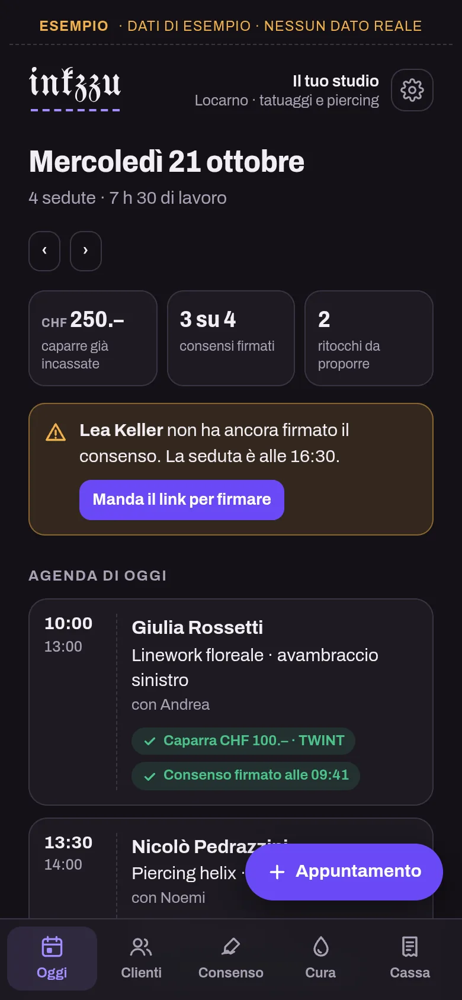
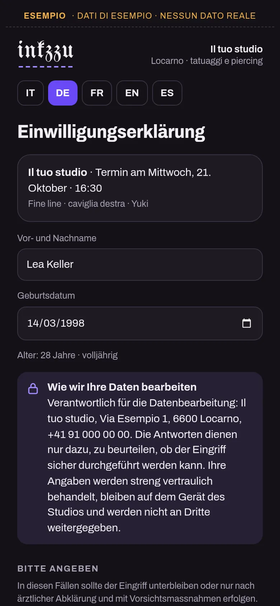
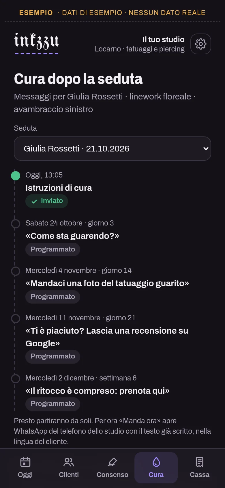
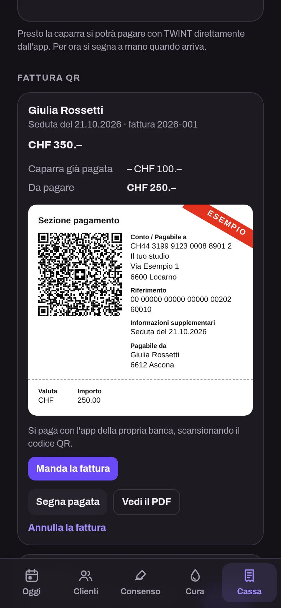
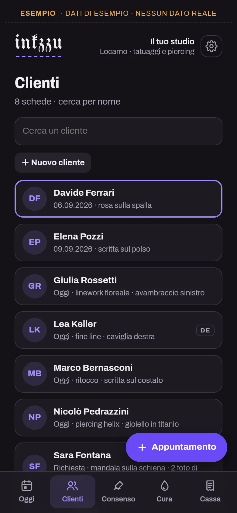

Per studi di tatuaggio e piercing
Il gestionale per studi di tatuaggio e piercing
Agenda del giorno, consenso nella lingua del cliente, cura dopo la seduta, registri per il Laboratorio cantonale e fatture QR. Da USD 3.99 al mese.
Si usa dal browser e si installa con un'icona, senza App Store.

Guardalo in azione
Due minuti di una giornata in studio, dall'agenda alla fattura QR.
Demo con dati inventati. Il link per firmare dal telefono del cliente, i messaggi che partono da soli e la caparra con TWINT, che si vedono nel video, arriveranno presto.
Che cosa fa
Tutto quello che oggi si annota su un quaderno, nei messaggi e nei fogli sparsi, in un posto solo.
L'agenda del giorno
Ogni mattina vedi chi arriva, chi ha già pagato la caparra e chi ha firmato il consenso.
Il consenso nella lingua del cliente
Il cliente lo compila e lo firma col dito sul telefono dello studio, in italiano, tedesco, francese, inglese o spagnolo, con le domande della Direttiva USAV. Il documento è pronto subito, da stampare o salvare in PDF.
Presto: il link per firmarlo dal suo telefono, prima di arrivareLa cura dopo la seduta
Istruzioni di cura, controllo, foto, recensione su Google e ritocco, al momento giusto e nella lingua del cliente: con un tocco si apre WhatsApp o un SMS con il testo già scritto, pronto da inviare.
Presto: i messaggi che partono da soliIn ordine per il Laboratorio cantonale
Sterilizzazione, piano d'igiene e inchiostri con lotto e scadenza. Il documento per un controllo si prepara con un tocco, da stampare o salvare in PDF.
Cassa e fattura QR
Caparre e incassi del mese, e la fattura QR svizzera in PDF, da mandare al cliente.
Presto: la caparra con TWINTI dati sulla salute, protetti
Con il server i dati dello studio stanno a Zurigo e su tutti i telefoni dello studio, anche senza rete. Le risposte sulla salute del consenso le vedono solo il titolare e l'artista della seduta.




Schermate con dati di esempio.
Si installa senza App Store
Inkzzu è un'app web: si apre dal browser e resta sul telefono con la sua icona, come le altre.
Apri inkzzu.web.app con Safari, tocca Condividi e poi «Aggiungi alla schermata Home».
Apri inkzzu.web.app con Chrome, tocca il menu ⋮ e poi «Installa app».
Con Chrome o Edge si installa dall'icona nella barra degli indirizzi. Funziona anche solo nel browser.
Prezzo
Un prezzo, tutta l'app
USD 3.99
al mese
USD 14.99
ogni 6 mesi
USD 24.99
all'anno
USD 74.99
una volta sola
Prezzi in dollari USA. Per ora Inkzzu si acquista scrivendo a info@utoapps.ch: ti mandiamo il codice appena ricevuto il pagamento. Presto, con il pagamento online, i piani che si rinnovano avranno un mese di prova gratis, la prima volta che ti abboni (serve una carta).
Si apre con il tuo codice
Lo ricevi quando acquisti l'app. Agenda, consensi, cura, Laboratorio cantonale e cassa, senza limiti. I dati restano nel telefono.
Installala sulla schermata Home e scarica una copia ogni tanto (Impostazioni): in Safari, senza installarla, i dati si possono perdere.
Compreso: il server in Svizzera
PrestoTutti i telefoni e i tablet dello studio, gli artisti con il loro accesso, e i dati a Zurigo anche se il telefono si perde (tranne le foto, che restano nel telefono che le ha scattate). Per ora è aperto solo agli studi che invitiamo a provarlo.
Lo vuoi con il tuo logo?
Inkzzu esiste in versione standard, così com'è, oppure su misura, con il tuo logo e i tuoi colori. Per la versione su misura scrivi a info@utoapps.ch.